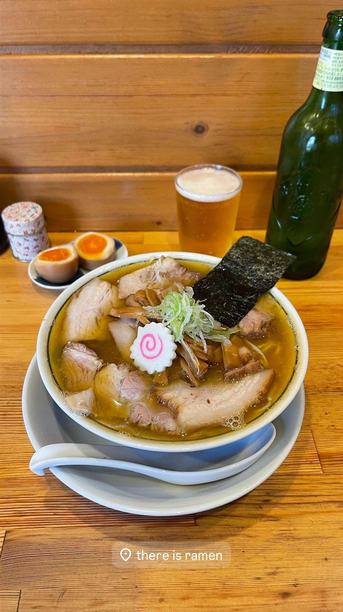
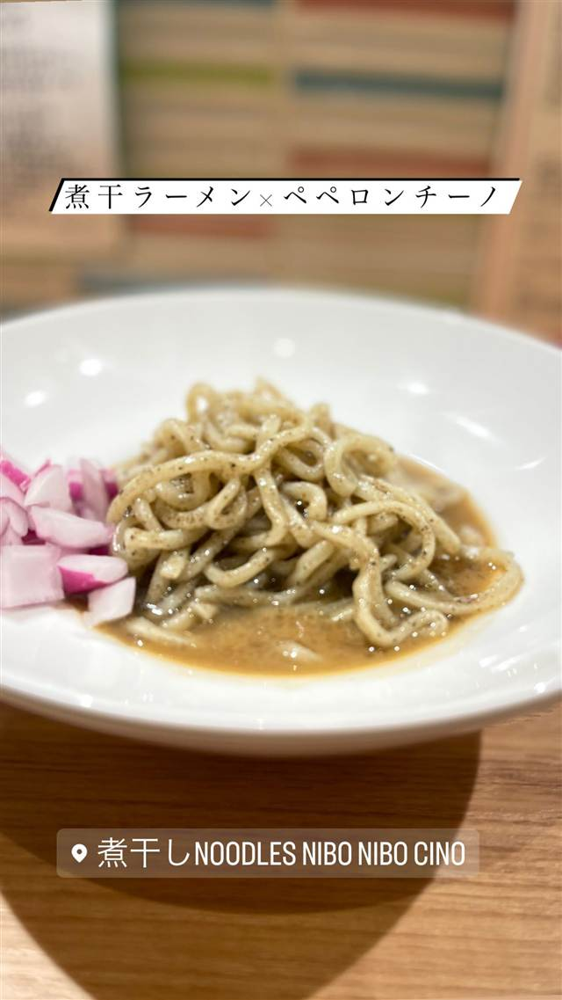
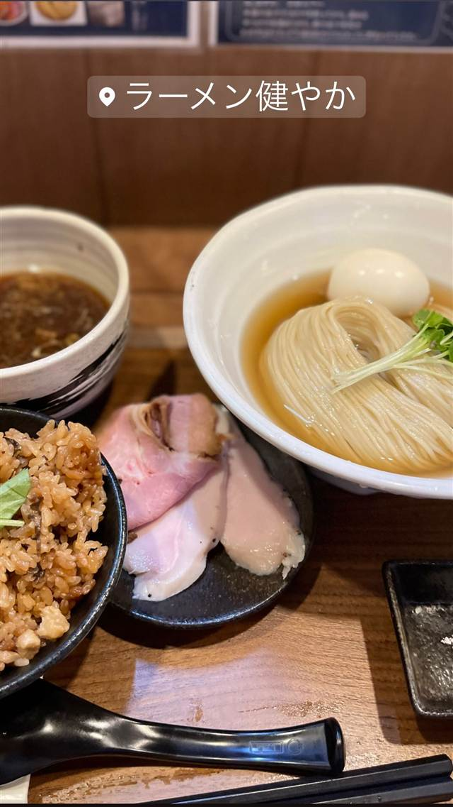
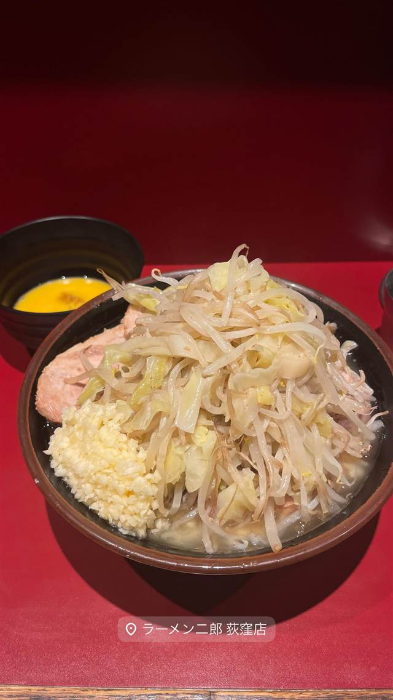
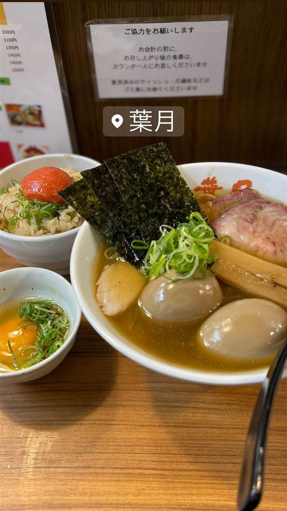
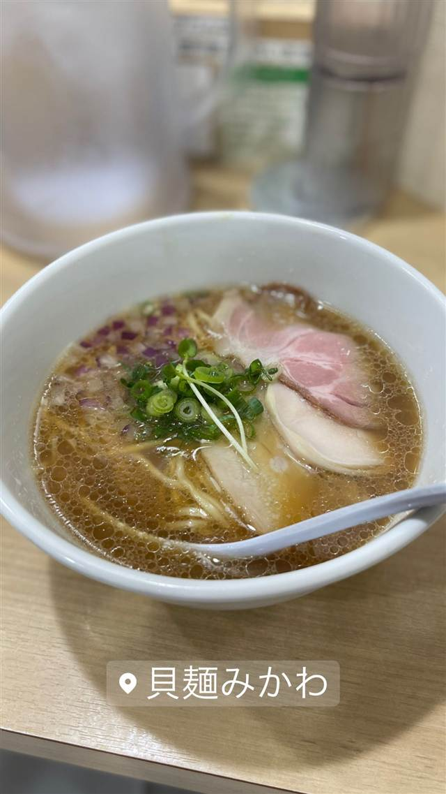

★ また行きたい煮干し・魚介で1位
there is ramen
開業1年でミシュランのビブグルマンを獲得した花びらチャーシュー
there is ramen
鶯谷「鴨to葱」の創業メンバーだった店主が2022年秋に荻窪で開いた一軒。豚と煮干しのバランスが良いスープと花びら状のチャーシューが評判を呼び、開業1年でミシュランのビブグルマンを獲得した。
TRIVIA
豆知識
- 看板ものれんもなく、なると（かまぼこ）のオブジェだけが目印
- 開業からわずか1年でミシュランのビブグルマンを獲得
REVIEWS
世間の評判
98.3ラーメンDB3.78食べログ
クセの少ない上品な煮干しスープ
- クセや苦味が少なく飲みやすい上品な煮干しスープだと評価されている
- 土日祝日も含めて通し営業をしている点を訪れやすいと評価する声がある
- スープの後半に物足りなさやインパクトの弱さを感じたという声もある
ラーメンデータベース 口コミ195件・総合39位・最新 2026-08
| 創業 | 2022年秋開業 |
|---|---|
| 系譜 | ㈱FFダイニング出身。同社が展開する鶯谷「鴨to葱」の創業メンバーの一人で、恵比寿「手打ち生粋中華蕎麦 綾川」でも修業 |
| 看板 | チャーシュー麺（味玉チャーシュー麺） |
| こだわり | 豚と煮干しをバランスよく効かせたスープに、花びらのように盛られた自家製チャーシューが特徴 |
| 掲載・評価 | ミシュランガイド東京でビブグルマンを開業約1年で獲得し、以降3年連続で掲載。食べログ百名店にも選出 |
| どこから | 23区の外れ・近郊 |
| 営業時間 | 月〜金 11:00-16:00、18:00-21:30 土・日 11:00-21:30 |
| 予算 | 昼 ¥1,000～¥1,999 夜 ¥1,000～¥1,999 |
| 場所 | 荻窪 東京都杉並区天沼3-10-16 プラザ荻窪102 |
| メモ | 荻窪駅北口から徒歩7〜8分の住宅街に位置。看板やのれんがなく、なると型のオブジェが目印 |
食べたもの：ラーメン
地図で見る店の情報ラーメンDBX（その日の営業）Instagram
NEARBY
近い店・同じ系統の店
-

★ 煮干し・魚介 旗の台 煮干しNoodles Nibo Nibo Cino 煮干しにオリーブオイルとニンニクを効かせた独自の「ニボニボチーノ」という一杯 昼 ¥1,000～¥1,999 夜 ¥1,000～¥1,999 -

★ 煮干し・魚介 三鷹駅 ラーメン 健やか 鶏と大アサリのダブル出汁が効いた無添加スープ 昼 ¥1,000～¥1,999 夜 ¥1,000～¥1,999 -

★ 二郎系(直系) 荻窪駅 ラーメン二郎 荻窪店 桜台仕込みの乳化スープ、女性スタッフの「癒し系」二郎 昼 ～¥999 夜 ～¥999 -

煮干し・魚介 雪が谷大塚 らぁめん葉月 丸鶏と名古屋コーチン、煮干しの清湯スープに極太のつけ麺 昼 ¥1,000～¥1,999 夜 ¥1,000～¥1,999 -
 煮干し・魚介 蒲田駅
麺屋 まほろ芭
広島県産牡蠣を1杯に8個使う濃厚牡蠣煮干しそば
昼 ¥1,000～¥1,999 夜 ¥1,000～¥1,999
煮干し・魚介 蒲田駅
麺屋 まほろ芭
広島県産牡蠣を1杯に8個使う濃厚牡蠣煮干しそば
昼 ¥1,000～¥1,999 夜 ¥1,000～¥1,999
-

煮干し・魚介 下北沢 貝麺 みかわ あさり・蛤・帆立の貝だけでとる、自家製貝油香る中華そば 昼 ～¥999 夜 ～¥999